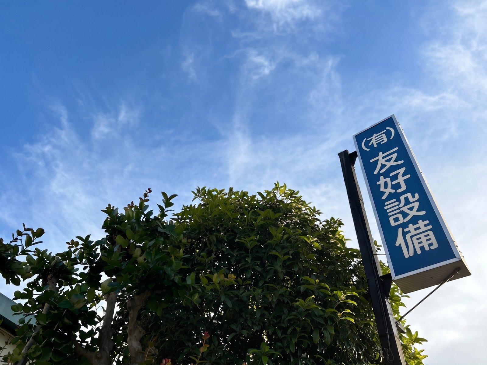
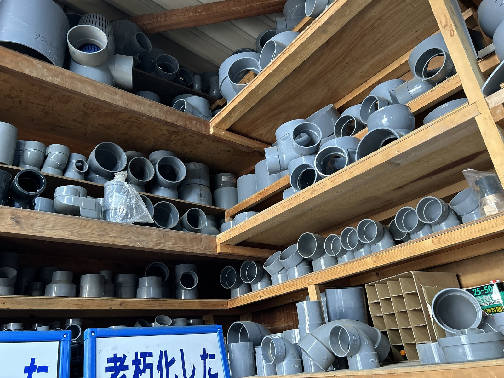
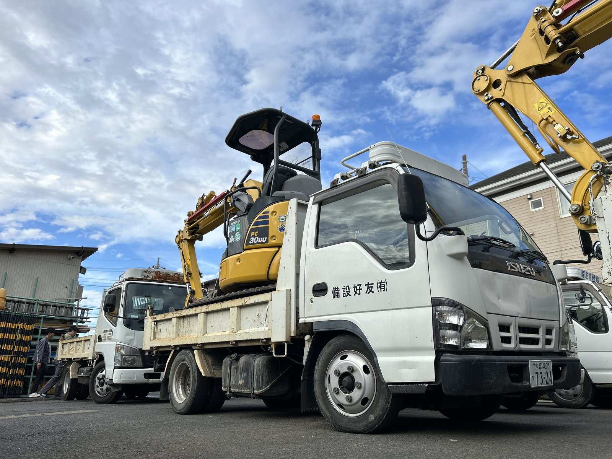

For Streets,
For Water,
For People.
1980年、埼玉・川口に生まれた友好設備は、土木と管工事のしごとを通じて、毎日のあたりまえを支えてきました。

01
History of YUKO
小さな水道工事店として産声をあげた友好設備は、45年のあいだ、地面の下のしごとと向き合ってきました。蛇口をひねれば水が出る、雨が降っても道が崩れない。誰かが土を掘り、管を埋め、舗装を整えているからこそ成り立つ、あたりまえの風景。それを支えるのが、わたしたちの仕事です。
会社案内をみる→
02
Method of YUKO
配管の継手ひとつ、舗装の転圧ひとつ。お客様の目には見えない部分にこそ、わたしたちは時間をかけます。45年の現場で積み上げてきた工法は、見えないからこそ"嘘がない"。地味だけど、それが友好設備の信用です。
事業内容をみる→
年間を通じた継続案件で、安定した受注を提供します。
業界相場より良い条件での発注を心がけています。
急ぎ案件・小規模案件もご相談OK。フットワーク軽く動きます。
Company
| 社名 | 有限会社友好設備 |
|---|---|
| 所在地 | 〒334-0058 埼玉県川口市大字安行領根岸1167 |
| 電話 | 048-287-0666 |
| FAX | 048-287-0665 |
| 代表者 | 代表取締役 竹田 茂 |
| 創業 | 1980年4月1日 |
| 従業員数 | 20名 |
| 事業内容 | 土木工事／管工事／水道施設工事／とび・土工工事／舗装工事 |